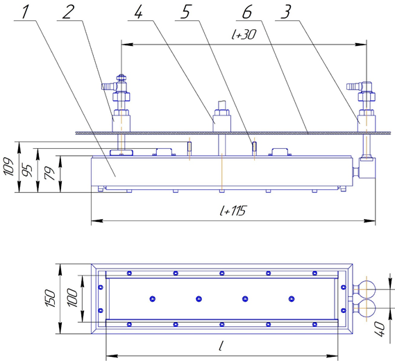

- Магнетронные распылительные устройства предназначены для распыления электропроводящих мишеней из металлов, сплавов, полупроводниковых материалов в режимах распыления постоянного тока, импульсных униполярных и биполярных, дуальных среднечастотных режимах. Разряд в магнетроне происходит в скрещенных электрических и магнитных полях.
Магнетроны широко применяются для нанесения следующих покрытий:
- металлических: Ti, Cr, Zr, Al , в «горячем» режиме Ni, Co, нержавеющая сталь. Эти покрытия используются в качестве адгезионных, функциональных слоев в оптике, микроэлектронике, при нанесении упрочняющих покрытий и других областях;
- полупроводниковых: Si, Ge, ZnO, ZnS, SiC и другие покрытия, используемые в качестве функциональных слоев микроэлектроники;
- керамических: TiN, AlTiN, TixOy, AlTiSiN, TiCN, CrxOy, Al2O3 и множества других, используемых в качестве упрочняющих, защитно-декоративных, фотокаталитических покрытий. ( инструмент, штампы, пресс-формы, мебельная и дверная фурнитура, декоративная керамика).
На рис. 1 показан схема одного из вариантов исполнения протяженного планарного магнетрона

Рис. 1 Схема магнетрона 1-корпус водоохлаждаемый, 2- высоковольтный ввод, 3-ввод охлаждения корпуса 4- ввод рабочих газов, 5- подвес магнетрона, 6- стенки вакуумной камеры
Планарный протяженные магнетроны по типу магнитной системы подразделяются:
1. Магнетрон с несбалансированной магнитной системой, характеризующейся дополнительной ионной бомбардировкой подложки.
Характеристики несбалансированных планарных магнетронов
| № | Наименование параметра | Значение |
| 1 | Рабочее давление, Пa | 0,15– 0,3 |
| 2 | Длина мишени изготовленных магнетронов, мм | от 250 до 3500 |
| 3 | Средняя энергия ионов аргон при напряжении до 650 В, эВ; | до 500 |
| 4 | Плотностью токана единицу длины зоны эрозии при ширине зоны эрозии 20 мм, мА/см | до100 |
| 5 | Однородность магнитного поля подлине (опция), % | ±3 (±1,5) |
| 6 | Плотность мощности на единицу площади зоны эрозии, Вт/см2 | 50 |
| 7 | Скорость осаждениянарасстоянии 120 мм до подложки | |
| - мишень из титана мкм/ час; | 3 | |
| -мишень из циркония мкм/час; | 8 | |
| -мишень из12Х18Н10Т (холодный режим) мкм/час; | 16 | |
| -мишень из12Х18Н10Т (горячий режим) мкм/час; | 25 | |
| 8 | Соотношение плотность тока ионов газа и распыленных атомов мишени /плотность потока распыленных атомов на подложку при напряжении смещения -100 В | от 3 до 7 |
| 9 | Коэффициент использования мишени (опция), % | 20-40 (70) |
| 10 | Рабочие газы | инертные газы, кислород, азот, углеводороды |
Свойства покрытий, получаемых с использованием реактивных процессов (нитриды, окислы, карбиды, карбо нитриды и окси нитриды), существенно более высокие при использовании магнетронов с несбалансированной магнитной системой, чем при использовании сбалансированных магнетронов за счет повышенной ионизации рабочего газа и распыленного материала мишени.
2. Магнетрон с сбалансированной магнитной системой, характеризуется меньшим воздействие ионов на подложку.
Характеристики сбалансированных планарных магнетронов
| № | Наименование параметра | Значение |
| 1 | Рабочее давление, Пa | 0,07– 0,15 |
| 2 | Длина мишени изготовленных магнетронов, мм | от 250 до 3500 |
| 3 | Средняя энергия ионов аргон при напряжении до 500 В, эВ; | до 400 |
| 4 | Плотностью токана единицу длины зоны эрозии при ширине зоны эрозии 35 мм, мА/см | до 120 |
| 5 | Однородность магнитного поля подлине (опция), % | ±3 (±1,5) |
| 6 | Плотность мощности на единицу площади зоны эрозии, Вт/см2 | 50 |
| 7 | Скорость осаждениянарасстоянии 120 мм до подложки | |
| - мишень из титана мкм/ час; | 5 | |
| - мишень из циркония мкм/ час; | 10 | |
| 8 | Соотношение плотность тока ионов газа и распыленных атомов мишени /плотность потока распыленных атомов на подложку при напряжении смещения -100 В | до 0,5 |
| 9 | Коэффициент использования мишени (опция), % | 20-40 (70) |
| 10 | Рабочие газы | инертные газы, кислород, азот, углеводороды |
Имеются два конструктивных исполнения ввода магнетрона
1. Магнетрон с выводом охлаждения и электропитания с тыльной стороны ( с одной стороны- вслучае одноконтурного охлаждения, и с двух противоположных сторон- случае двухконтурного охлаждения Рис. 1) подключаются к охлаждению и электропитанию с использованием медных трубок во фторопластовой изоляции с уплотнительными узлами, собственной разработки фирмы-изготовителя магнетрона.
2. Магнетронцы с коаксиальным вводом характеризуются возможностью простого изменения положение в вакуумной камере перемещением и вращением по оси источника, либо перемещением источника с узлом уплотнения в любое подходящее отверстие в камере. Коаксиальный ввод не требует дополнительной электрической изоляции и электрически соединен с корпусом установки и позволяет производить отпыл мишени, и защищать от перепыления с другим источников, поворотом магнетрона.
Магнетрон могут иметь другие конструктивные особенности:
- с полым охлаждаемым корпусом (два контура охлаждения анод и корпус);
- заслонкой ионного источника;
- устройство поворота ионного источника с коаксиальным вводом;
- конструктивными особенностями для распыления дорогостоящих материалов (золото, серебро, сплавы циркония, иттрия, гадолиния, индия);
- наличием опции работы с "горячими мишенями" ( температура мишени до 900 С);
- наличием встроенной газораспределительной системы или ее отсутствием;
- использование в процессах HIPIMS;
- прямое и косвенное охлаждение мишеней;
- магнетроны, сбалансированные для напыления оксида индий- олова (прозрачные проводящие покрытия).
Наши магнетроны имеют проверенные временем и тысячами технологических процессов конструкцию и эксплуатируются не только в России, но и в США, Англии, Венгрии, Австрии и в других странах.
Взаимодействие с Клиентами начинается с подбора технологического источника, подбора дополнительных опций, консультации по стандартным режимам проведения процесса и продолжается сервисным обслуживанием источников.
Преимущества наших магнетронов:
- предоставляем модель магнетрона для проектировщиков, выдаем оптимальное расстояние до подложки;
- магнитное поле магнетрона, распыляет строго определенную зону и гарантирует отсутствие посторонних примесей в подложку и высокий коэффициент использования мишени;
- гальваническое покрытие внутренних полостей охлаждения магнетрона и магнитопровода, позволяет продлить ресурс работы;
- быстрые сроки изготовления;
- многостадийный контроль качества;
- стабильные характеристики с течением времени.
Наша компания разработало серию магнетронов с косвенным охлаждением, где мишени вставляется в виде вкладок, что позволяет увеличить коэффициент использования мишени до 70%. Также такое решение позволяет нам снабжать пользователей магнетронов мишенями в кратчайшие сроки и уменьшить стоимость нанесенного покрытия, получив конкурентное преимущество. Мишень любого типоразмера этой серии магнетронов набирается из стандартных вкладок. Поэтому Вам не нужно ожидать долгих поставок мишени и ждать простоя дорогостоящего оборудования.
Опыт и профессионализм нашей команды позволяет не только изготавливать стандартный ряд магнетронов, но и провести НИОКР магнетронов различного типа и назначения. Сейчас в разработке и в стадии испытаний находятся несколько проектов:
- магнетрон с «горячей» мишенью для распыления ферромагнитных материалов и нанесения керамических материалов (нанесение оксидов редкоземельных металлов;
- кольцевой магнетрон для нанесения дорогостоящих материалов.
Обратитесь в нашу компанию и получите магнетрон оптимально подходящий для ваших процессов.